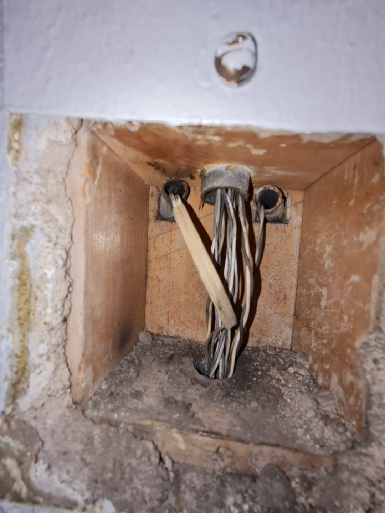
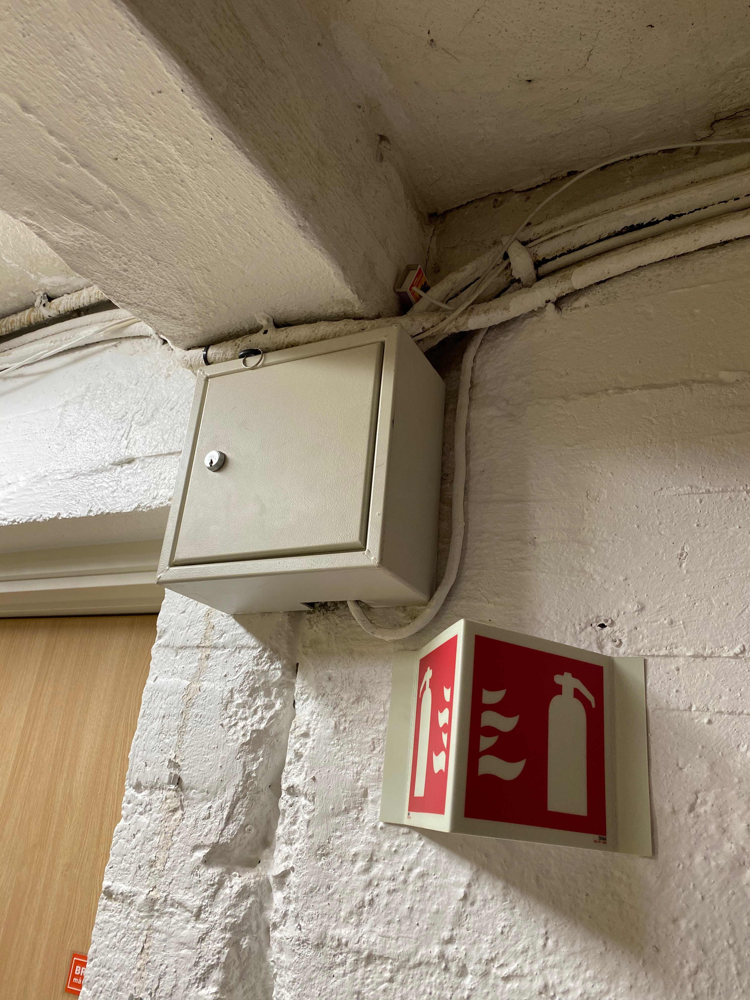
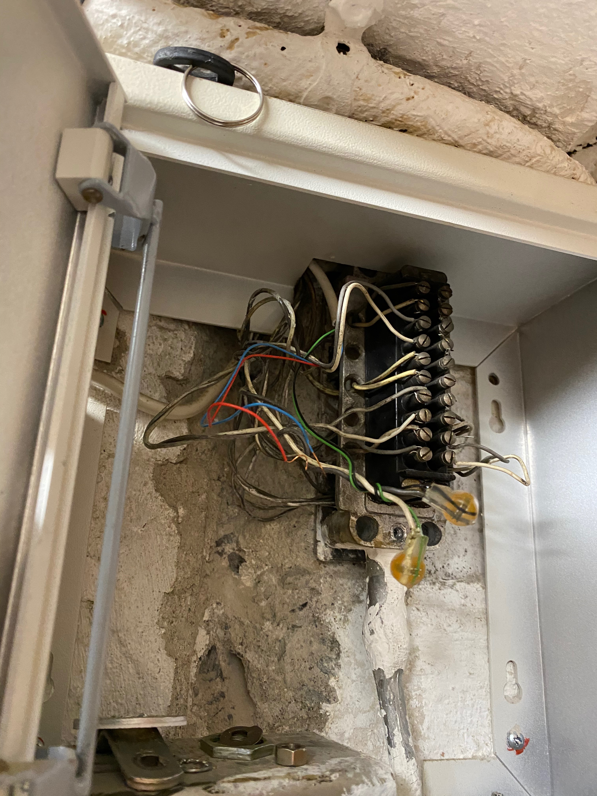
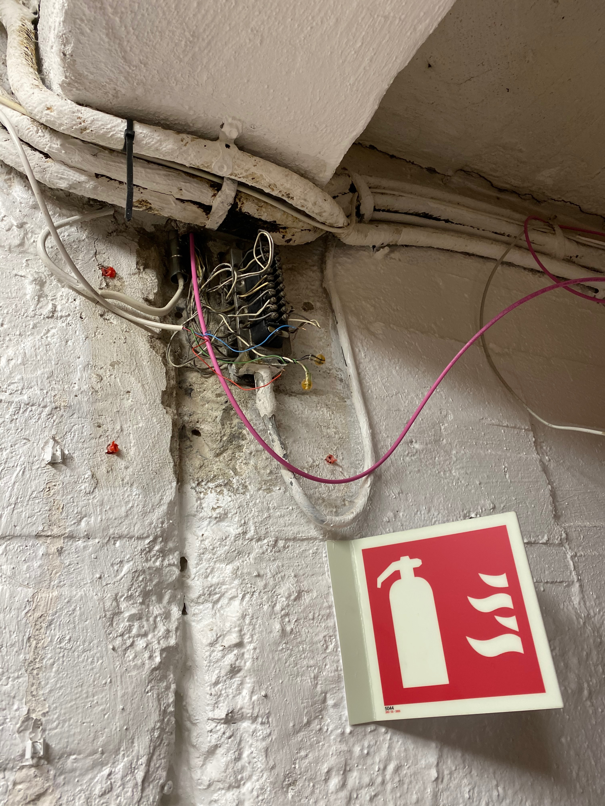
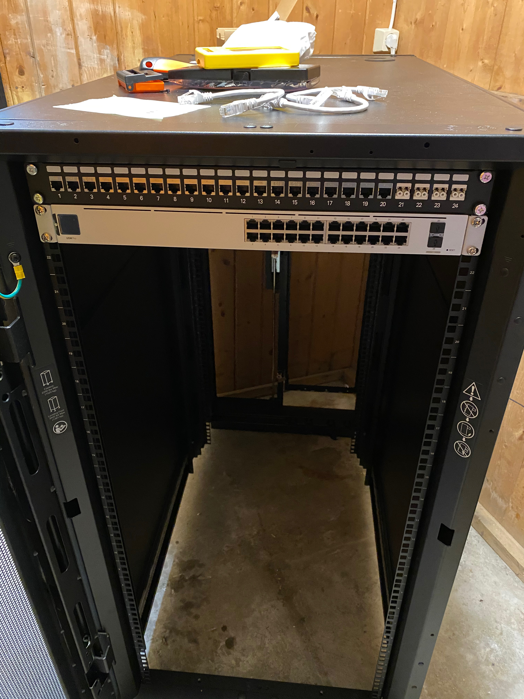

A little background
I am lucky to be inspired by very smart people at work, all the time.
Almost three years ago, I wanted to buy a NAS (Network Attached Storage), as having hard isks connected to a router’s USB port wasn’t cutting it anymore. I had my eyes on a QNAP when a colleague came in with an older HP desktop and said “hey, try FreeNAS on this one, just to make sure a NAS is your thing”. Little did I know that it was the start of a lot of work, learning and joy (some of it described on my post about building my homelab machine).
It turned out that the HP desktop was too loud, not something I could keep on our living room. So I was ordered asked politely to move it to the basement. Luckily my wifi still could reach the basement, but a NAS on WiFi is not a thing, really. So I was not able to play with the cool stuff like Nextcloud when the speeds were that bad.
I then applied to the board of our housing association to be able to pull a cable from my flat to the basement. I got an approval, but under the condition that I had to find an existing duct to pull the cable. I wasn’t allowed to drill or otherwise make a new duct. “Piece of cake”, I thought, not knowing it was going to take me almost 2 years to get it done.
Three electricians came here, plus a couple of smart friends. Nobody saw anything usable. We have old ducts used for antennas, but they go upwards, and while we also have a storage room on the loft, we have no power there to plug stuff. I thought I could use the same duct used for the cable TV, but it turns out that one also goes up to the loft.
I was frustrated, as I really wanted to use my NAS. I focused then on building a silent machine that I could have on the living room, and that I managed to do, as described on the link above.
But with the pandemics came home office, and I have to work on the living room. That low humming of the hard disks (which is the only noise coming out from that machine) was really annoying me. I had to fix it.
I then asked permission to the board to get power on the loft, since all the ducts seemed to be going there. They gave me the permission - amazing board! - but recommended me to wait until august (this was like may 2020) since a company was going to upgrade the lights and electricity of the whole building, so it would make sense to get this done by the same company. Deal.
Things got postponed, and the company started its work on our building only in December. But, as they say, good things come to those who wait: I decided to use fiber optics instead of an ethernet (cat6/7) cable, as my motherboard have SFP+ ports, and I thought it was more future proof. It turns out that the company had an employee who worked in telecom for decades and could do the job for me.
The odyssey to get fiber spliced
The electrician came to see the flat, and to check the loft to see how to get power there. He thought it would be hard to use the duct used for tv cables, as it seemed to be tight there. And then he asked, “why don’t you use the cellar?”. I explained to him that I didn’t find any existing duct I could use to pass the cable through to the cellar.
While we took the stairs down, he immediatelly looked about my entry door and asked, “what is this?”. That was a little box between the doors of the two flats. The man worked in telecom for decades, as I said, so he knows his stuff. He took some stairs, opened the little box, and bingo! He found a duct to the cellar, which was not in use and had just old telephone cables there.
This is the old phone duct: 
We agreed then we would do the job in January 2021, as it seemed to be possible to pass the fiber cable through that duct.
But then my luck went way: his company couldn’t find the appropriate cable (I wanted OM4, as I wanted to use multi mode fiber, which I kinda regret now, but I already had the multi mode transceivers). I decided to buy the cable myself.
If you try to buy anything related to fiber optics in Norway as a private customer (ie. not as a company), you are basically out of luck. But finally I found a company that accepted to sell me the cable I wanted, and I had to take a 40 min ride on a bus to go there, walk on slippery roads and get the cable home. I called the guy to ask when we could start pulling the cable, but it turns out he was on a sick leave and wasn’t going to work before a few weeks. I was on my own.
I asked the company where I bought the cable if they could recommended me of anyone that could do the job for me, and they gave me a name. I was skeptical, because EVERY single company I called either didn’t reply or wouldn’t take my business. But this guy agreed to come and see my building.
Then we got into another problem: the duct ends up on a box on the basement that nobody had a key for.
The guy, as the one previously, said he might have a key for it (it is an old box that was used back in the days by Telenor - the Norwegian telecom incumbent). Suddenly the guy disappeared! He wouldn’t reply my sms’s, and I was on my own again.
I had no idea how to open this box: 
Another colleague recommended an electrician, but this one wouldn’t be available before two months. He had a colleague that would call me instead, but never did.
Fortunately, my colleagues are not just a source of inspiration, they helped me a lot. The same one who encouraged me to start with FreeNAS offered to see if we could pull the cable ourselves. That way, I would save a lot with the costs.
It was tough: very tight ducts, lots of old wires. Still, we were not sure we could make it through the box. I bought a fish tape and an endoscopic camera to see if we could avoid opening the box, but that was a no go.
Now I had to ask the board permission to ask a locksmith to open the box and change the key so we could open it. I was really relieved when I got the permission to do it. I called a locksmith, and after a few days he came and opened the thing.

Now my friend came home to help me, and we tried to pull the cable through the duct, and for a few minutes we thought it wasn´t going to go through, but after a few attempts, we finally reached the cellar!
We then pulled the fiber cable with the help of the fish tape, and it reached my storage room! Perfect! Now I need to get this fiber spliced!
Oh, the joy to see that cable come through…

The thing is that I bought the cable terminated on one side, but it had to be terminated on the other side, as it would never pass the ducts with the connectors.
My saga with companies specialized in fiber optics restarted: no company would splice the fibers for me, and those who had splicing machines for rent would not rent them to me (they said they only rent to other companies, not to private customers). I was getting desperate.
I decided then to press the “F..it” button and buy a cheaper (which is still expensive) fiber splicing machine. Saw some on Ali Express and Banggood, and decided to get the same model from Amazon, as the delivery was faster and because, well, I trust Amazon a bit more than individual sellers on Ali Express.

My plan was to buy the machine, splice my cable, make sure it works, and then sell the machine. I’ve put it on the shopping cart on Amazon, went to the kitchen to take the bread I was baking out of the oven, and when I was coming back to finalize the shopping, I got a call from the electrician who was on a sick leave! He was back, happy that I managed to pass the cable, and he could come in two days to splice the fiber! I can’t tell you what a relief that was.
He came last Friday, spliced the fibers (I got two pairs), and had everything beautifully installed down the basement. He asked me to test, and to tell him if anything was wrong.
When he left, I tested, it didn’t work. Tested again, no signal. On the third time, after I inverted the connects, it worked! I got now one (possibly two, I haven’t tested the other fiber pair yet) 10Gbits/sec connection to my basement!
I got my big NAS box out of our living room, connected to the switch in the basement, and came running upstairs to see if everything was ok. Ah, the joy of a quiet living room…
Aftermath
I am pretty happy with my setup. It was totally worth it. Oslo is a very expensive city, so space use has to be optimized. Being able to use my storage room to house some equipment is perfect: cool temperatures, no problems with noise, and room to experiment a bit with other equipment if I want to do so.
However, the bitter taste is still here: it shouldn’t have to be this hard. It is appalling to think how hard it is to get a bit of a slightly more specialized equipment when you are not a company. I could have ordered a lot from overseas, which I did in fact - fs.com has an amazing service and sold me some of the patch cables I needed. But it is shocking that if a user wants to install fiber for using on an internal LAN, it might be very hard to buy the components or the get someone to do the fiber service. A part of me wishes that I should have bought that machine, so that I won’t have to rely on the good will of companies to help me if I need to service the cable, replace it, etc.